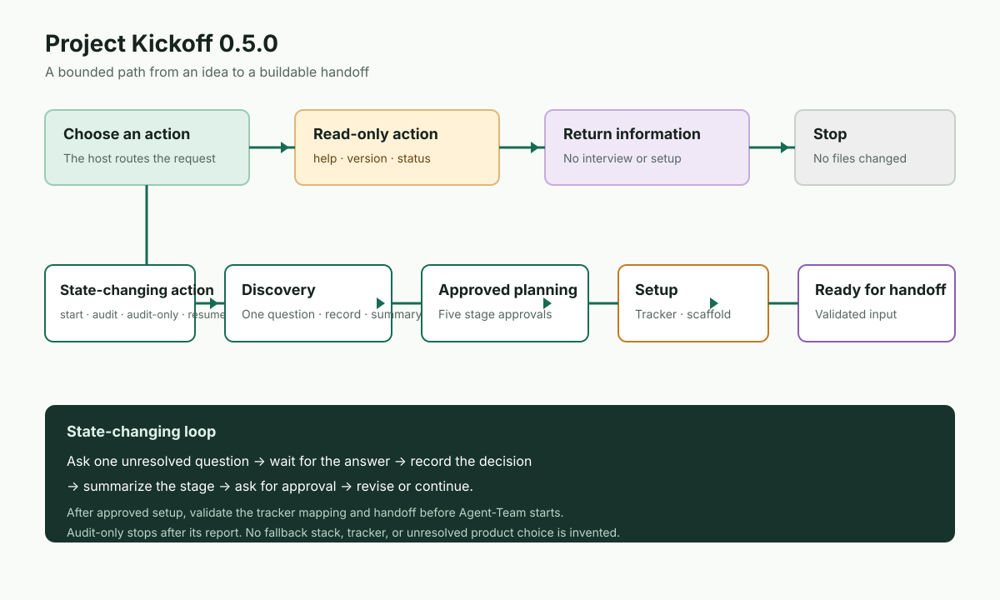
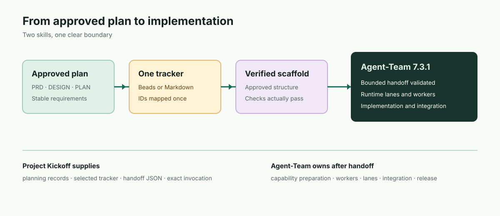

Discovery
Inspect a new idea or audit an existing project. Ask one unresolved question and save the answer.
A planning skill for Codex and Claude Code
Current release · 0.5.0Project Kickoff turns a new idea or an existing codebase into an approved product definition, experience direction, technical blueprint, minimal scaffold, and a clean handoff to Agent-Team 7.3.1.
The shape of the work
The lifecycle stays simple while the interview adapts to the project. Every state records what is known, what is approved, and what still needs an answer.
Inspect a new idea or audit an existing project. Ask one unresolved question and save the answer.
Approve product, scope, experience, technical, and execution decisions as they become ready.
Prepare only the approved project scope: dependencies, one tracker, instructions, and a minimal scaffold.
Validate the plan, tracker mapping, scaffold, and bounded handoff. Start Agent-Team yourself.

Decisions with a paper trail
Project Kickoff keeps the interview small enough to finish and the record detailed enough to resume. The five stages are a sequence of decisions, not five rigid scripts.
The join between planning and building
When implementation remains, Project Kickoff writes and validates .project-kickoff/AGENT_TEAM_HANDOFF.json. The handoff contains task IDs and approved facts; Agent-Team owns runtime lanes, workers, capability preparation, and integration.

Use Beads or Markdown at root TASKS.md or .agent-team/TASKS.md for a compatible Agent-Team handoff.
Kickoff may declare a required capability such as Graphify. Agent-Team prepares and verifies it later.